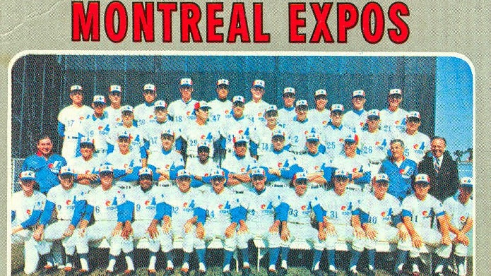

Les Expos de Montréal
Les Expos de Montréal étaient une franchise de baseball de la
Ligue majeure de baseball (LMB) de 1969 à 2004 ayant pour
domicile la ville de Montréal, au Québec, Canada.
Les Expos ont été la première franchise de la LMB hors des
États-Unis. La franchise fait ses débuts au stade Jarry de
Montréal en 1969 avant de déménager au nord-est du centre-ville
de la métropole en 1977, soit au Stade olympique de Montréal.
La franchise a déménagé à Washington, D.C., en 2005,
où elle est devenue les Nationals de Washington.
Fondation de l'équipe
L'expansion de la Ligue Nationale
La Ligue nationale de baseball fut une ligue à huit équipes pendant
plus de six décennies. Après avoir été témoins au début des années
1960 de l'organisation (finalement avortée par manque de moyens
financiers) d'une nouvelle ligue professionnelle de baseball, la
Continental League, qui menaçait de lui faire compétition, la Ligue
nationale décide de procéder à une expansion afin d'élargir ses
rangs et installer des franchises dans des villes américaines qui
auraient pu se joindre à un éventuel nouveau circuit. C'est ainsi
qu'apparaissent en 1962 les Mets de New York et les Colts 45s de
Houston (qui changèrent par la suite de nom pour Astros). De son
côté, la Ligue américaine de baseball ajoute les Angels de Los
Angeles et les Senators de Washington (en remplacement des Senators
historiques qui venaient alors de déménager au Minnesota pour
devenir les Twins), qui déménageront en 1972 à Dallas pour devenir
les Rangers du Texas. En 1967, la Ligue américaine de baseball
décide d'ajouter deux autres clubs : les Royals de Kansas City et
les Pilots de Seattle, dont l'entrée sur les terrains est prévue
pour 1969.
La Ligue nationale décide donc à son tour d'ajouter deux équipes,
pour faire passer son nombre de franchises de dix à douze. Cinq
villes sont sur les rangs pour les deux franchises disponibles :
Buffalo, Dallas, San Diego, Montréal et Milwaukee (qui vit ses
Braves quitter pour Atlanta après la saison 1965). Du lot, la
candidature de la ville californienne de San Diego semble la plus
solide, et la Ligue nationale annoncera effectivement l'avènement
des Padres. La candidature de Montréal sort de l'ordinaire car
jamais une ville située au Canada n'a fait partie de la MLB.
En 1967, le maire de Montréal, Jean Drapeau, mandate le
vice-président du Conseil exécutif de sa ville, Gerry Snyder, pour
faire les démarches afin d'obtenir pour Montréal une franchise de
baseball majeur. Montréal est à cette époque une ville en pleine
expansion. Sa population a franchi le cap des 2 millions
d'habitants et la métropole vient d'enregistrer un important succès
populaire avec la tenue de l'Exposition universelle de 1967. Cet
événement a de plus amené l'ouverture du métro de Montréal et
l'inauguration de l'Île Notre-Dame. La Place des Arts ouvrit ses
portes à la même époque. De plus, Montréal est sur les rangs pour
l'obtention des Jeux olympiques d'été de 1976, qu'elle obtiendra
dans les années suivantes. Enfin, la ville de Montréal abrite une
population supérieure à onze des vingt villes possédant déjà une
franchise des majeures, et compte le plus grand nombre d'habitants
parmi les cinq villes candidates.
Le lundi 27 mai 1968, le président de la Ligue nationale de
baseball, Warren Giles, annonce aux médias rassemblés à l'Hôtel
Excelsior de Chicago, Illinois, que deux franchises joindront les
rangs de la Ligue nationale au printemps 1969, et que ces deux
franchises seront localisées à San Diego et à Montréal.
La question du stade
Lorsque Montréal postule pour l'obtention d'une franchise des
Ligues majeures en 1967, la ville ne possède alors aucun stade de
baseball adéquat pour accueillir une équipe professionnelle de ce
calibre. Le vieux Stade Delorimier, domicile des défunts Royaux de
Montréal, un club de baseball mineur, est inutilisé et en
décrépitude; il sera finalement démoli en 1969. L'Autostade, où
évoluent les Alouettes de la Ligue canadienne de football, semble
le lieu le plus approprié pour héberger un club de baseball majeur,
bien que l'endroit ait été conçu pour le football et que le nombre
d'estrades soit à ce moment insuffisant pour recevoir un nombre
adéquat de spectateurs. Pour Drapeau, il est hors de question de
construire un stade avant d'avoir l'assurance que Montréal ait une
franchise, processus peu usité à l'époque et impensable de nos
jours, où une ville n'ayant pas d'enceinte ne saurait postuler pour
une équipe.
Le maire Drapeau propose de modifier la configuration de
l'Autostade pour en faire un stade approprié pour des matchs de
baseball, d'augmenter le nombre de places de 25 000 à 37 500.
Surtout, il s'engage à faire construire un stade de baseball doté
d'un toit amovible qui serait prêt à temps pour la saison 1972.
Ce sera finalement le Stade Jarry qui accueillera l'équipe en 1969,
en attendant la construction du Stade olympique de Montréal.
Première équipe de direction
- Propriétaire : Charles Bronfman
- Président : John McHale
- Directeur-gérant : Jim Fanning
- Gérant : Gene Mauch
Nom, logo et uniformes
Le 5 septembre 1968, le nom de la franchise montréalaise est
annoncé au public.
Le 14 janvier 1969 sont officiellement dévoilés le logo, les
couleurs et les casquettes de la future équipe.
Le logo de l'équipe consiste un monogramme qui représente un « M »
stylisé pour « Montréal », composé d'un « e » en rouge flanqué
d’une barre blanche pour former un « d » et d’un « b » en bleu pour
« équipe de baseball » Le logo est légèrement modifié en 1992,
alors que le « m » original est intégré à un dessin de balle de
baseball entourée d'un cercle rouge et bleu. Les uniformes ont été
légèrement modernisés au fil des ans mais sont sensiblement
demeurés les mêmes (blanc pour les matchs à domiciles et bleu pâle
à l'étranger) jusqu'en 1992. À partir de cette saison, l'uniforme à
domicile est blanc avec de minces lignes verticales bleues et le
mot Expos apparaît sur la chemise, au lieu du logo original comme
par le passé. Pour les matchs à l'extérieur, les joueurs endossent
un uniforme de couleur grise où le mot « Montréal » remplace
« Expos » sur la chemise, l'accent sur le « e » du nom de la ville
étant représenté par une fleur de lys, emblème du Québec. C'est
également en 1992 qu'est abandonnée la fameuse casquette tricolore,
remplacée par une bleue. Dans les années 2000, on a également vu
apparaître à l'occasion, comme casquette « alternative » pour
certains matchs, une casquette rouge arborant l'insigne des Expos.
Les Expos de Montréal doivent leur nom à l'Exposition universelle
de Montréal (Terre des Hommes), tenue en 1967. Leurs couleurs
d'équipe furent le bleu, le blanc et le rouge, rappelant ainsi les
origines françaises de la ville de Montréal.
Histoire
Les débuts au Parc Jarry (1969)
Les Expos ont joué leur premier match le 8 avril 19695, contre les
Mets, au Shea Stadium à New York. Les Expos ont remporté la
victoire au compte de 11 à 10. Le lanceur Dan McGinn a eu l'honneur
de frapper le premier circuit de l'histoire des Expos.
Le 14 avril 1969, les Expos ont inauguré leur saison locale au Parc
Jarry contre les Cardinals de Saint-Louis, et cette partie était
historique en soi puisque c'était la première partie des Ligues
majeures de Baseball à être disputée à l'extérieur des États-Unis.
Les Expos ont également remporté cette rencontre au compte de 8 à 7
devant 29 184 spectateurs. Le voltigeur Mack Jones a été le héros
du match avec 1 circuit, 1 triple, 3 points produits et deux
attrapés spectaculaires.
Trois jours plus tard, le lanceur Bill Stoneman a lancé le premier
match sans point ni coup sûr de l'histoire des Expos contre les
Phillies à Philadelphie. Après des débuts prometteurs, l'équipe a
connu par la suite plusieurs moments difficiles notamment une série
de 20 défaites consécutives. Malgré les déboires, les partisans de
Montréal ont adopté plusieurs joueurs de la formation des tout
débuts, dont la vedette Rusty Staub surnommé le Grand Orange, Coco
Laboy, Bob Bailey, John Bateman, Ron Fairly, Steve Renko,
Mack Jones, John Boccabella et le lanceur québécois Claude Raymond,
acquis des Braves d'Atlanta au mois d'août. À la conclusion de la
saison, les Expos ont remporté 52 victoires et subi 110 défaites.
L'ère Gene Mauch (1970-1975)
En 1970, le gérant Gene Mauch a mené le club à une saison de 73
victoires, ce qui a permis d'attendre l'objectif prévu de 70
victoires en 70. Le lanceur de relève québécois Claude Raymond a
connu une excellente saison en protégeant 23 victoires.
En 1971, le deuxième but Ron Hunt a établi un record en étant
atteint 51 fois par les lanceurs de la Ligue Nationale de Baseball.
Avant le début de la saison 1972, les Expos ont échangé leur
première grande vedette, Rusty Staub, aux Mets de New York en
retour de Tim Foli, Ken Singleton et Mike Jorgensen. Le 2 octobre
1972, le lanceur Bill Stoneman a lancé son 2e match sans point ni
coup sûr au Parc Jarry contre les Mets de New York.
En 1973, les Expos ont participé contre toute attente à leur
première course au championnat mais ils ont clôturé la saison à 3
parties et demie des champions de la section, les Mets de New York.
Malgré une excellente saison, le lanceur de relève Mike Marshall a
été échangé à la fin de la saison aux Dodgers de Los Angeles contre
le voltigeur Willie Davis.
À la suite de la saison 1974, les Expos ont réalisé le pire échange
de leur histoire en cédant le voltigeur Ken Singleton et le lanceur
Mike Torres aux Orioles de Baltimore contre le lanceur Dave McNally
et le voltigeur Rich Coggins. Pendant que Singleton et Torres ont
joué à leur hauteur de leur talent dans les années subséquentes,
McNally a pris sa retraite dès le mois de juin 1975 et Coggins a dû
aussi terminer sa carrière à cause de blessures ce qui fait que les
Expos se sont retrouvés les mains vides avec cette transaction et
cela a fait en sorte de retarder la progression du club de quelques
années.
Au début de la saison 1975, les Expos ont entamé ce qu'ils ont
appelé la phase 2, c'est-à-dire de construire l'équipe avec des
joueurs issus des filiales plutôt qu'avec des vétérans rejetés des
autres équipes comme dans les premières années. Cette phase a
permis d'intégrer dans l'équipe des joueurs prometteurs comme Gary
Carter, Larry Parrish et Barry Foote. Toutefois, les résultats ont
tardé à venir et à la suite d'une autre saison décevante en 1975,
le gérant Gene Mauch a été remercié de ses services.
Le départ du Parc Jarry et l'arrivée au Stade olympique (1976-1978)
Les Expos ont continué leur virage jeunesse en 1976 avec un nouveau
gérant, Karl Kuehl. Malheureusement, la transition a été difficile
et l'équipe a connu une saison de 107 défaites. La gérance du club
par Kuehl a été souvent contestée par ses joueurs (notamment Tim
Foli) et il a été congédié avant la fin de la saison. C'est le
directeur-gérant Charlie Fox qui a terminé la saison comme gérant.
La saison de misère des Expos est presque passé inaperçue à cause
de la tenue des Jeux olympiques de Montréal en juillet 1976. Le
club n'a attiré que 646 704 spectateurs à sa dernière saison au
Parc Jarry.
En 1977, les Expos ont élu domicile au Stade olympique de Montréal
avec un nouveau gérant, Dick Williams et l'arrivée de nouveaux
joueurs d'expérience, Dave Cash et Tony Perez. Le match d'ouverture
dans le nouveau stade a attiré plus de 57 000 spectateurs le
vendredi 15 avril 1977. Les Expos se sont toutefois inclinés 7 à 2
contre les Phillies de Philadelphie. Le voltigeur Ellis Valentine a
eu l'honneur de frapper le premier circuit dans l'histoire du Stade
olympique. À la fin de la saison, les Expos ont remporté 20
victoires de plus qu'en 1976 et de beaux jours pointaient à
l'horizon.
En 1978, le lanceur Ross Grismley est devenu le seul lanceur de
l'histoire de la concession à connaître une saison de 20 victoires.
Toutefois, le club n'a remporté qu'une victoire de plus que la
saison précédente et malgré son grand potentiel, la 10e saison
des Expos de Montréal s'est avérée une déception.
Les courses au championnat et le premier titre (1979-1981)
C'est alors que s'amorcent les plus belles années de la franchise.
En effet, de 1979 à 1983, plus de 2 millions de spectateurs ont
franchi les tourniquets du stade (sauf en 1981, en raison de la
grève des joueurs). Chaque année, l'équipe a lutté pour le
championnat, avec un noyau de joueurs étoiles comme Gary Carter,
Andre Dawson, Steve Rogers, Tim Raines, Larry Parrish,
Warren Cromartie, Ellis Valentine, Woodie Fryman, Bill Lee,
Jeff Reardon, Chris Speier, Rodney Scott, Bill Gullickson, et
plusieurs autres.
En 1979, l'équipe atteignit un sommet, avec 95 victoires, mais
manqua de souffle en fin de saison en terminant à deux parties des
Pirates de Pittsburgh. Le fait d'avoir disputé 8 programmes doubles
en septembre et d'avoir perdu 5 des 6 parties contre ces mêmes
Pirates dans le dernier droit a coûté le championnat aux Expos.
Le club a réussi à attirer plus de 2 millions de spectateurs pour
la première fois de son histoire. De plus, un des faits marquants
de la saison fut le retour de la première vedette de la concession,
Rusty Staub. Il fut ovationné à tout rompre par 59 260 spectateurs
lors de son retour à Montréal le 27 juillet 1979.
En 1980, un coup de circuit dramatique de Mike Schmidt, à la 12e
manche de la 161e partie du calendrier régulier, permit aux
Phillies de Philadelphie de devancer les Expos au premier rang.
Contrairement à la saison précédente, les blessures à des joueurs
clés (Ellis Valentine, Bill Lee, David Palmer, Larry Parrish et Ron
LeFlore à la fin de la saison) et un voyage difficile en Californie
au début du mois de septembre ont grandement affecté les chances
des Expos de remporter leur premier championnat. Un des hauts faits
d'armes de la saison fut les 97 buts volés de Ron LeFlore.
Pour l'année 1981, tous les espoirs étaient permis et l'arrivée de
la recrue Tim Raines a permis de remplacer la vitesse de Ron
LeFlore dans la formation. Le 10 mai 1981, le lanceur Charlie Lea a
lancé un match sans point ni coup sûr dans le 2e match d'un
programme double contre les Giants de San Francisco au Stade
olympique de Montréal. Toutefois, une grève des joueurs sera
déclenchée entre le 12 juin et le 31 juillet 1981. Cette grève a
fait en sorte de diviser la saison en deux et de recommencer une
nouvelle moitié de saison. Le 8 septembre 1981, le gérant Dick
Williams est congédié et il est remplacé par Jim Fanning. Ce
changement de gérant donne un nouvel élan aux Expos et le 3
octobre 1981, Les Expos ont remporté le championnat de la 2e
moitié de saison grâce à un gain de 5-4 contre les Mets au Shea
Stadium de New York.
Cette conquête leur valut le droit d'affronter les champions de la
première moitié de saison, les Phillies de Philadelphie, dans Série
de divisions 3 de 5 qui devait déterminer les véritables champions
de la division est de la Ligue Nationale de 1981. Les Expos ont
remporté les deux premiers matches à Montréal par un pointage
identique de 3 à 1. Toutefois, ils ont perdu les deux parties
suivantes, à Philadelphie. Au 5e et décisif match à Philadelphie,
Steve Rogers a battu son rival Steve Carlton en lançant un match
complet et les Expos ont triomphé par un pointage de 3 à 0,
remportant ainsi le premier (et unique) championnat de division de
leur histoire.
La Série de championnat 1981 a mis aux prises les Expos et les
Dodgers de Los Angeles. La série a commencé en Californie et les
Dodgers ont remporté la première partie au compte de 5 à 1. Alors
que tout le monde s'attendait à un autre triomphe des Dodgers au 2e
match, grâce à la présence du superbe lanceur Fernando Valenzuela,
l'on assista plutôt à une performance exceptionnelle du lanceur Ray
Burris, qui a vaincu les Dodgers par jeu blanc au compte de 3 à 0.
De retour à Montréal pour le 3e match, le pointage était de 1-1 en
fin de 6e manche quand le voltigeur de droite Jerry White souleva
toute la foule du Stade olympique par un retentissant circuit de 3
points contre le lanceur des Dodgers Jerry Reuss. Steve Rogers
lança un match complet et les Expos n'étaient qu'à un seul gain de
la Série mondiale de baseball grâce à une victoire de 4-1.
Malheureusement, les Expos ont perdu le 4e match par un pointage de
7 à 1, ce qui rendit nécessaire la tenue d'un 5e match, deux jours
plus tard, le lundi 19 octobre 1981 (la partie devait être
présentée le dimanche, mais fut reportée à cause de la pluie). Ce
fut le théâtre d'un nouveau duel entre Ray Burris et Fernando
Valenzuela. Les deux lanceurs ont très bien performé et, au début
de la 9e manche, le pointage était de 1 à 1. C'est alors que le
gérant des Expos Jim Fanning a pris une décision controversée en
amenant en relève le lanceur partant Steve Rogers. Après deux
retraits, il a accordé un long circuit au frappeur des Dodgers
Rick Monday avec un compte de 3 balles et une prise. Les Expos,
n'ayant pu remonter la pente à la fin de la 9e manche, durent
s'incliner par un pointage de 2 à 1 contre les Dodgers et virent
s'évanouir leur rêve d'accéder à la Série Mondiale.
Les déceptions et l'échange de Gary Carter (1982-1984)
En 1982, les Expos avaient bon espoir de répéter leur exploit de
1981 mais des blessures à des joueurs-clés et l'absence de Tim
Raines au milieu de la saison pour des problèmes de drogue ont fait
en sorte que les Expos n'ont pas été en mesure de remporter le
championnat à nouveau. Le 13 juillet 1982, le premier match des
étoiles disputé à l'extérieur des États-Unis a eu lieu au Stade
olympique de Montréal. Les Expos étaient bien représentés avec 5
joueurs, soit Gary Carter, Andre Dawson, Tim Raines, Al Oliver et
le partant Steve Rogers.
En 1983, les Expos ont attiré 2 320 651 spectateurs au Stade
olympique, le record absolu de la concession. Malgré une masse
salariale très élevée et la présence de joueurs vedettes, les Expos
n'ont pu remporter que 82 victoires et ils ont fini en 3e position
à 8 parties de la tête.
Au début de la saison 1984, les Expos ont cru réaliser un bon coup
en embauchant le célèbre Pete Rose. Ce coup n'a pas eu les effets
escomptés et l'équipe a terminé avec une fiche inférieure à .500
pour la première fois depuis 1978 et l'assistance au Stade
Olympique a même chuté de près 714 000 spectateurs.
Le 10 décembre 1984, les Expos ont échangé leur receveur vedette
Gary Carter aux Mets de New York, contre 4 joueurs soit
Hubie Brooks, Mike Fitzgerald, Herm Winningham et Floyd Youmans.
Plusieurs sont d'avis que cette transaction marqua le début de la
fin pour les Expos. En effet, c'était la première transaction
provoquée par des considérations économiques, le contrat de Gary
Carter pesant trop lourd dans la balance.
Les années de transition (1985-1989)
De 1985 à 1989 sous la gouverne du gérant Buck Rodgers, les Expos
ont été compétitifs à chaque année grâce à l'apport de joueurs
comme Tim Raines, Tim Wallach, Hubie Brooks, Andrés Galarraga,
Jeff Reardon, Bryn Smith, Dennis Martínez, Pascual Perez et Tim
Burke.
L'équipe a connu un nouvel élan en 1985 et elle a été dans la
course au championnat jusqu'au milieu du mois d'août. Toutefois,
un désastreux séjour à domicile contre les équipes de la Californie
a sorti l'équipe de la course.
La saison suivante, l'équipe a tenté de rejoindre les puissants
Mets de New York au sommet du classement de la division mais des
blessures majeures à Hubie Brooks et Mike Fitzgerald dans le
match du 1er août 1986 ont saboté tous les espoirs des Expos de
rattraper les Mets. Malgré une fin de saison décevante, le
voltigeur Tim Raines a remporté le championnat des frappeurs de la
Ligue Nationale de baseball avec une moyenne au bâton de .334.
En 1987, l'équipe a surpris tous les experts en remportant 91
victoires et en terminant à 4 parties des meneurs, les Cardinals de
Saint-Louis. Cette équipe a surpris avec l’émergence de joueurs
laissés pour compte comme Casey Candaele, Mitch Webster, Vance Law,
Pascual Perez et Dennis Martinez et aussi par la meilleure saison
du joueur de 3e but, Tim Wallach, qui a frappé 26 circuits et
produit 123 points.
Les Expos a célébré leur 20e anniversaire en 1988 avec de très
grands espoirs à la suite de l'éclatante saison 1987. Malgré
l'arrivée du nouveau directeur-gérant Dave Dombrowski en juillet,
l'équipe n'a pas été en mesure de répéter les exploits de la saison
précédente et a clôturé la saison avec une fiche de .500
(81 victoires et 81 défaites).
En mai 1989, les Expos ont tenté un grand coup avec l'acquisition
du lanceur étoile gaucher Mark Langston des Mariners de Seattle en
retour de trois jeunes lanceurs prometteurs, dont Randy Johnson.
L'arrivée de Langston a permis de solidifier une rotation de
partants comptant déjà Dennis Martinez, Pascual Perez, Bryn Smith
et Kevin Gross. L'équipe a même occupé seul le premier rang de la
division est du 26 juin au 6 août mais des balayages subis à New
York et Chicago au début du mois d'août a fait reculer l'équipe
dans le classement. Les Expos n'ont jamais pu reprendre leur élan
dans les deux derniers mois de la saison et l'équipe a dû se
contenter de la 4e position à la fin de la saison.
La fin de l'ère Bronfman et la vente du club (1990-1991)
La déception de l'année 1989 a été dure à avaler pour le
propriétaire Charles Bronfman et au début de l'année 1990, il a
annoncé son intention de vendre le club. Ne trouvant aucun
investisseur au Québec prêt à prendre le contrôle du club, le
président Claude Brochu s'est associé à Jacques Ménard de Burns Fry
pour trouver des personnes prêts à investir pour l'achat du club
afin que l'équipe reste à Montréal. Après plusieurs mois d'efforts,
un consortium a été constitué et la vente du club de Bronfman à ce
consortium a été approuvée par la Ligue majeure de Baseball en juin
1991.
L'année 1991 a été très difficile pour le club. Le 25 juin, une
déchirure de la toile couvrant le toit du Stade olympique força le
club à disputer ses parties locales à ciel ouvert pour la première
fois depuis 1986. Le 13 septembre 1991, une poutre s'est effondrée
du Stade olympique de Montréal ce qui a forcé l'équipe à jouer ses
13 derniers locaux sur la route. L'équipe a connu une saison de 91
défaites et l'assistance locale a été sous la barre du million pour
la première fois depuis 1976. Un des seuls évènements positifs de
cette saison fut la partie parfaite lancée par Dennis Martinez le
28 juillet à Los Angeles.
Les bonnes années et la grève de 1994 (1992-1994)
Le club aspira à nouveau aux grands honneurs en 1992 grâce au
recrutement efficace des années précédentes. En effet, des joueurs
comme Larry Walker, Marquis Grissom, Moises Alou, John Wetteland,
Mel Rojas, Ken Hill, Jeff Fassero, Darrin Fletcher, Wilfredo
Cordero, Delino DeShields représentaient la force de l'équipe.
Le 22 mai 1992, un point tournant dans l'histoire de la concession
est survenu à la suite du congédiement du gérant Tom Runnells et à
la nomination de Felipe Alou au même poste. Par la suite, l'équipe
a continué sur sa lancée et elle a donné une chaude lutte aux
Pirates de Pittsburgh pour l'obtention du premier rang. Le dernier
match de la saison locale le 27 septembre 1992 restera à jamais
gravé dans la mémoire des partisans des Expos. En effet, Gary
Carter, rapatrié par le club au début de la saison, a frappé son
dernier coup sûr (un double) pour donner la victoire au compte de
1-0 contre les Cubs de Chicago. Les partisans ont réservé une
longue ovation à Carter à la suite de ce coup d'éclat.
En 1993, l'équipe a connu sa meilleure saison depuis 1979 en
remportant 94 victoires. La série disputée au Stade olympique de
Montréal contre les Phillies de Philadelphie au mois de septembre a
été le point culminant de la saison. En novembre 1993,
le directeur-général Dan Duquette a procédé à une transaction
d'abord controversée mais qui s'avérera une des meilleures de
l'histoire de la concession, soit en échangeant Delino Deshields
aux Dodgers de Los Angeles en retour d'un lanceur du nom de Pedro
Martinez.
Tout est tombé en place pour le club et en 1994, les Expos étaient
en voie de connaître la meilleure saison de leur histoire et le 12
août 1994, les Expos occupaient le premier rang de la division est
de la Ligue nationale et possédaient le meilleur dossier du
baseball majeur (74-40). L'équipe dirigée par Felipe Alou détenait
une avance de six parties sur les Braves d'Atlanta. Cependant,
une grève déclenchée par l'Association des joueurs cette journée-là
mit fin aux espoirs des Expos d'accéder aux séries pour une
première fois depuis 1981. Le conflit conduisit à l'annulation de
toutes les activités du baseball majeur pour le reste de la saison.
Pour la première fois depuis 1904, la Série Mondiale de baseball
n'aura pas lieu.
Les éternelles reconstructions et l'espoir d'un nouveau stade
(1995-1999)
Le conflit au baseball majeur a pris fin le 31 mars 1995 grâce à
une ordonnance de la Cour des États-Unis qui rétablit les
conditions de travail des joueurs selon l'ancienne convention.
Les Expos n'ayant pas les revenus nécessaires pour passer la saison
et éviter la faillite, le président Claude Brochu a ordonné au
directeur-gérant du club Kevin Malone de se débarrasser, pour des
raisons financières, des vedettes de l'édition 1994 soit Larry
Walker, John Wetteland, Marquis Grissom et Ken Hill.
Le calendrier 1995 a été écourté à 144 parties et malgré les
efforts mis de l'avant pour améliorer le club (acquisitions de
Henry Rodríguez et David Segui entre autres), les blessures à des
joueurs clés comme Moises Alou et Butch Henry ont sorti l'équipe de
la course aux éliminatoires et l'équipe a dû terminer la saison au
dernier rang.
En 1996, l'équipe a surpris tous les experts en bataillant jusqu'au
161e match de l'année pour une place en séries éliminatoires. Avec
un club composé de laissés-pour-compte comme Henry Rodríguez, Mike
Lansing, David Segui, F.P. Santangelo et de jeunes joueurs
prometteurs comme Rondell White, Ugueth Urbina, Mark Grudzielanek
et l'un des meilleurs lanceurs du baseball majeur, Pedro Martinez,
l'équipe a fini la saison avec un dossier de 88 victoires et 74
défaites et à deux matchs du meilleur deuxième.
Le 20 juin 1997, Claude Brochu a convoqué les médias pour annoncer
son intention de construire un nouveau stade au centre-ville pour
les Expos de Montréal. Pour ce faire, il a sollicité le secteur
privé et surtout le gouvernement québécois à investir dans ce
controversé projet. Au niveau du terrain, Pedro Martinez a connu
une saison de rêve et il est devenu le seul lanceur de l'histoire
des Expos à remporter le trophée Cy Young, décerné au meilleur
lanceur de la Ligue nationale.
En 1998, la direction des Expos s'est à nouveau départi de ses
meilleurs éléments dans le but de reconstruire ultimement l'équipe
en vue du déménagement au nouveau Stade, prévu en 2001. Durant ce
processus de reconstruction, l'émergence du voltigeur vedette
Vladimir Guerrero a généré de l'espoir auprès des partisans en vue
de jours meilleurs. En octobre, Claude Brochu quitte la direction
de l'équipe à la suite des pressions exercées par les autres
actionnaires de l'équipe.
En 1999, les démarches entreprises pour la construction d'un Stade
tombent à néant, surtout à la suite du refus catégorique du
Gouvernement du Québec d'investir dans le projet. L'assistance au
Stade olympique chute à moins de 750 000 spectateurs et malgré une
saison extraordinaire de Vladimir Guerrero (42 circuits, 131 points
produits), l'équipe a connu une saison de 94 défaites. Le 9
décembre 1999, Jeffrey Loria devient le nouveau commandité et
président du club et les espoirs de jours meilleurs reviennent à
nouveau.
L'arrivée de Loria et la fin du parcours (2000-2004)
L'arrivée de Jeffrey Loria et de son beau-fils David Samson à la
direction du club a généré de nouveaux espoirs auprès des partisans
en vue de la construction du stade et la mise en place d'une
formation compétitive. Malheureusement, divers facteurs ont fait en
sorte que le duo Loria-Samson n'a pas réalisé ses promesses
(absence de télévision et de radio anglophone pour la saison 2000,
assistance décevante, blessures à des joueurs clés, dollar canadien
faible, abandon de l'option d'achat du terrain visant à construire
le nouveau stade) et malgré une autre bonne saison de Vladimir
Guerrero, la fin semble proche.
Après une autre saison décevante en 2001 (marqué par le
congédiement de Felipe Alou) et dans laquelle l'équipe a attiré le
moins de spectateurs dans une saison (642 748), la Ligue majeure de
baseball tenta de dissoudre l'équipe, mais en prit plutôt le
contrôle en 2002. Tony Tavares (président), Omar Minaya
(directeur-gérant) et Frank Robinson (gérant) ont pris les rênes de
l'équipe à la demande de la Ligue majeure de baseball, le temps de
relocaliser la concession vers une autre ville.
En 2002, l'équipe a surpris les experts avec un dossier de 83
victoires et 79 défaites. Pour supporter la vedette de l'équipe
Vladimir Guerrero, les Expos pouvaient compter sur l'émergence
d'excellents joueurs dont le deuxième-but Jose Vidro, l'arrêt-court
Orlando Cabrera, le voltigeur Brad Wilkerson, le receveur Michael
Barrett et le lanceur Javier Vazquez. En juin, l'équipe a joué le
tout pour le tour et le directeur-gérant Omar Minaya a acquis les
services de l'excellent lanceur Bartolo Colon, dans une transaction
qui rappelle celle de Mark Langston en 1989. Vladimir Guerrero a
failli devenir le 3e joueur de l'histoire à frapper 40 circuits et
voler 40 buts en une saison mais il lui a manqué un seul circuit à
la fin de la saison pour accomplir cet exploit.
En 2003, la Ligue majeure de baseball a forcé les Expos à disputer
22 matchs locaux à Porto Rico et ce dans le but de générer
davantage de revenus. À la fin du mois d'août, les Expos ont
balayé une série de quatre parties contre les Phillies de
Philadelphie au Stade olympique dans une ambiance qui rappelait les
belles années des Expos. À égalité en tête de la course du meilleur
deuxième à la suite de cette série, l'équipe a ensuite perdu les
sept parties suivantes (dont quatre de suite en Floride) et les
espoirs d'une participation aux séries se sont dissipés.
Avant la saison 2004, le joueur vedette Vladimir Guerrero a signé
une entente comme joueur autonome avec les Angels d'Anaheim. Son
départ a forcé la main du club à mettre d'autres joueurs sous
contrat dont Carl Everett, Tony Batista et Nick Johnson. Toutefois,
le départ de Guerrero a pesé lourd dans la balance et les Expos ont
connu une autre année de misère.
Le 29 septembre 2004, la Ligue majeure de baseball annonça
officiellement le déménagement de la franchise des Expos à
Washington, D.C. pour 2005. Le même jour, les Expos jouèrent leur
dernier match à domicile, perdant 9-1 contre les Marlins de la
Floride, devant 31 395 spectateurs au Stade olympique. Le 3 octobre
2004, les Expos jouèrent le dernier match de leur histoire au Shea
Stadium contre les Mets de New York et perdirent 8-1. Endy Chavez
constituera le dernier retrait de l'histoire des Expos, un faible
roulant au deuxième but. Tout avait commencé au stade Shea, en
1969. C'est dans ce même stade que tout se termina.
De 1969 à 2004, ils ont disputé 5 698 matchs et connu 2 755
victoires, mais n'ont jamais remporté le championnat mondial.
Durant cette période, près de 49 millions de spectateurs ont
assisté à leurs matchs à domicile.
Les mascottes
En 1978, peu après leur arrivée au Stade olympique, les Expos suivent
l'exemple déjà concluant des Padres de San Diego et des Phillies de
Philadelphie, deux clubs ayant présenté à leur public, quelques
années plus tôt, des mascottes devenues très populaires : le Chicken
(en) et Phillie Phanatic (en), respectivement. Le public montréalais
voit donc apparaître dans les estrades du Stade Olympique un
personnage futuriste : Souki. La première mascotte des Expos aurait
été inspirée par les jeunes enfants du propriétaires Charles
Bronfman, fans de l'univers tout nouveau de Star Wars. L'entrée en
scène de Souki est loin d'être un succès : le longiline personnage,
sorte d'astronaute en uniforme des Expos avec une tête démesurée en
forme de balle de baseball, n'est pas du tout populaire et terrorise
même les enfants. Il est vite relégué aux oubliettes.
C'est ainsi qu'apparaît, pour la première fois en mai 1979, Youppi!.
Le gros personnage orange est un coup de génie de la part de la
division marketing des Expos de Montréal. Il leur est d'une utilité
remarquable lors des diverses promotions à l'extérieur du Stade et
lors d'activités charitables. Durant les matchs, les pitreries
de Youppi! et surtout son habitude de se moquer des arbitres lui
causent certains problèmes. Il était notamment détesté par le
président du club, John McHale, qui n'appréciait guère la présence de
mascottes dans les stades de baseball. Le 23 août 1989, Youppi!
devient la première mascotte en Amérique du Nord à être expulsé d'un
match de sport professionnel : le gérant des Dodgers de Los Angeles,
Tommy Lasorda, se plaint que les cabrioles que la mascotte des Expos
fait sur l'abri des joueurs de son équipe ennuient ses troupes, et
l'arbitre ordonne à Youppi! de quitter les abords du terrain.
La création de Youppi! est attribuée à Roger D. Landry, à l'époque
responsable du marketing de l'équipe, qui aurait trouvé le nom du
personnage avec le concours de Rodger Brulotte.
Youppi! demeure la mascotte des Expos de Montréal jusqu'au tout
dernier match local, le 29 septembre 2004. L'apparence de la mascotte
est toujours demeurée la même durant les années d'existence des
Expos, hormis la chemise et la casquette, qui ont été adaptées
lorsque l'équipe a changé ses uniformes en 1992. Considérée
comme partie de l'héritage sportif québécois22, la mascotte ne suit
pas la franchise à Washington en 2005. Elle devient finalement à
partir de la saison 2005-2006 de la Ligue nationale de hockey la
mascotte des Canadiens de Montréal. En plus d'être la première
mascotte de cette franchise centenaire, Youppi! est la première
mascotte du sport canadien et nord-américain à passer d'une ligue
professionnelle à une autre23.
Youppi! fait partie du musée du Temple de la renommée du baseball à
Cooperstown, New York, où il rejoint le San Diego Chicken et Philly
Phanatic.